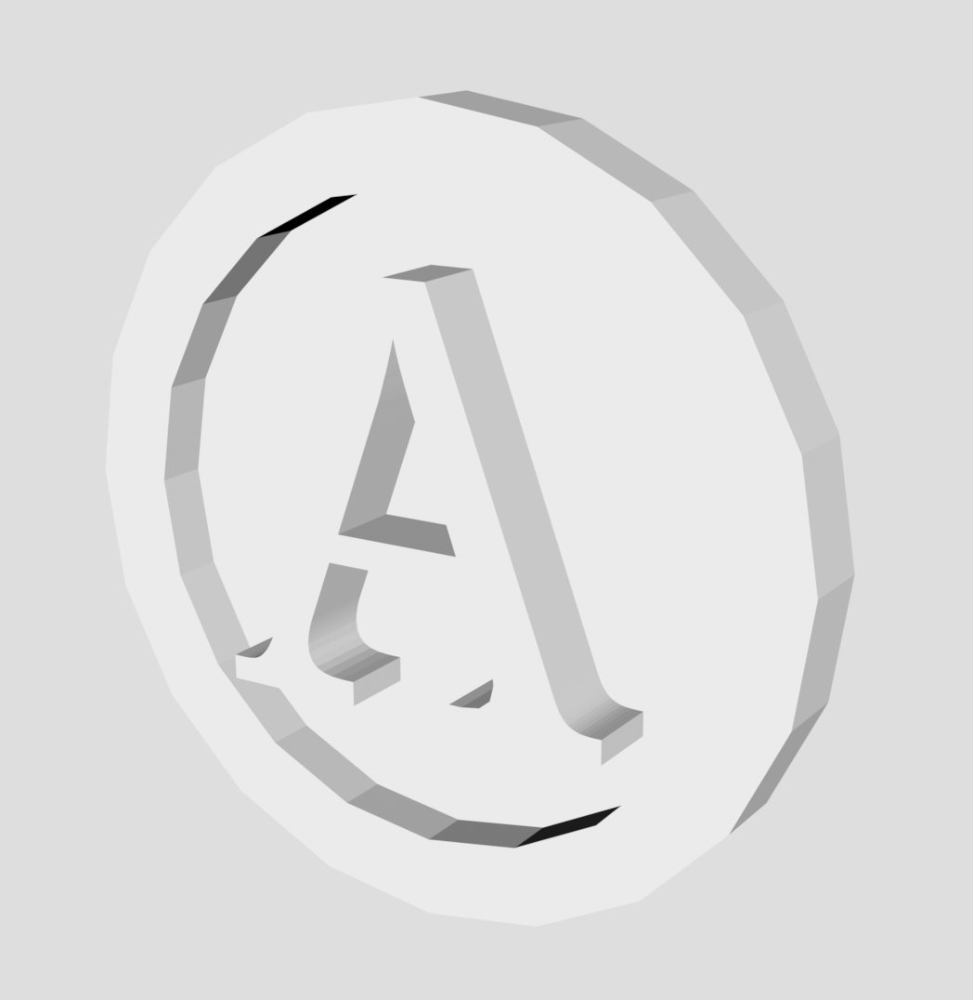
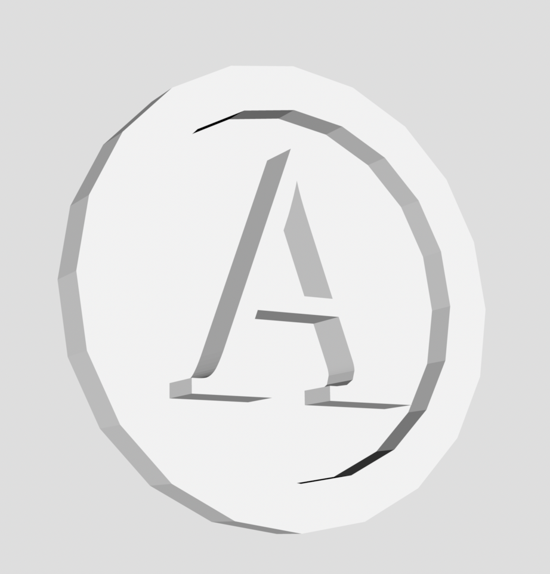
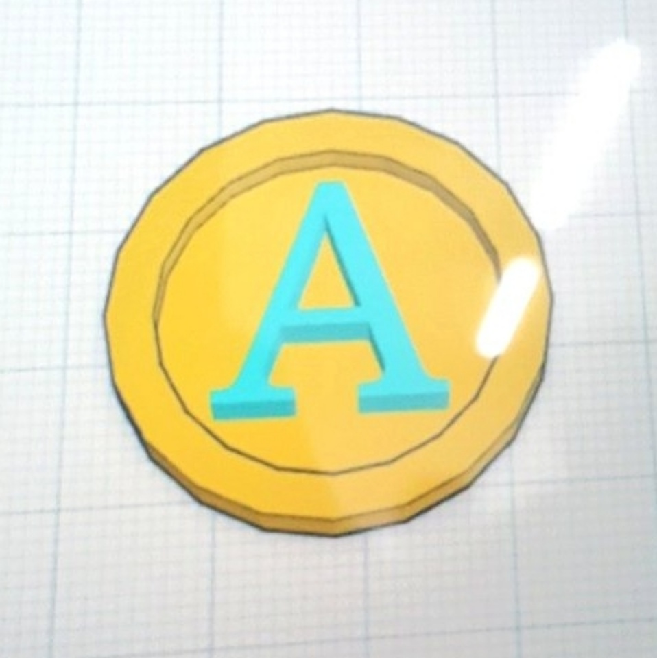
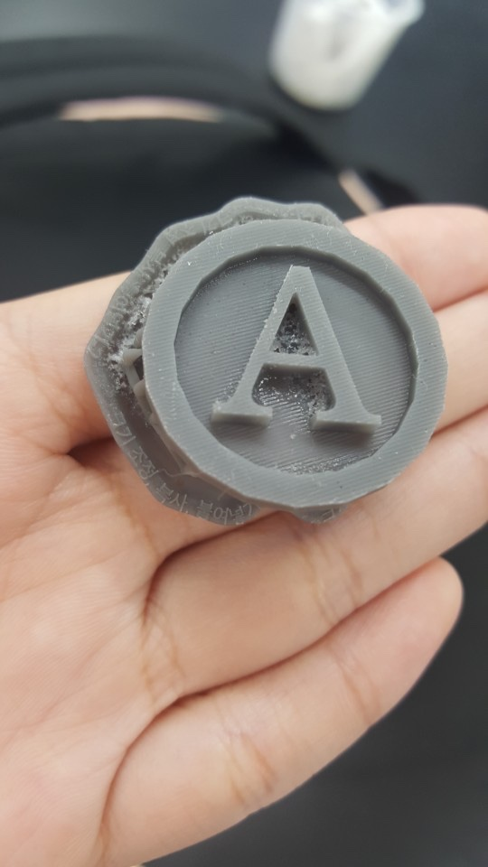
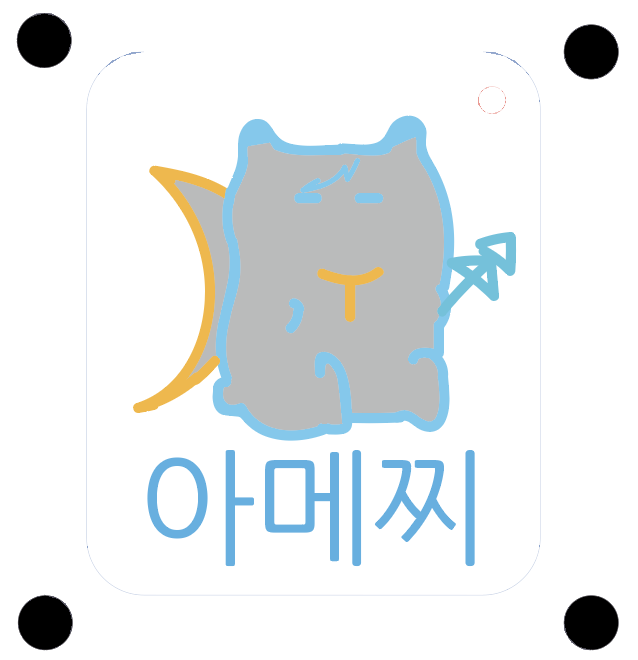
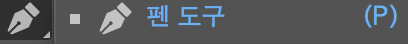
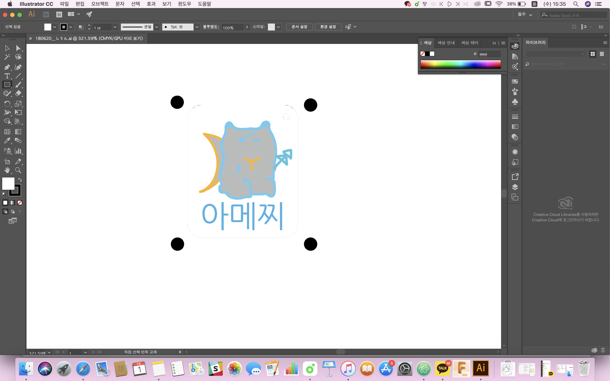
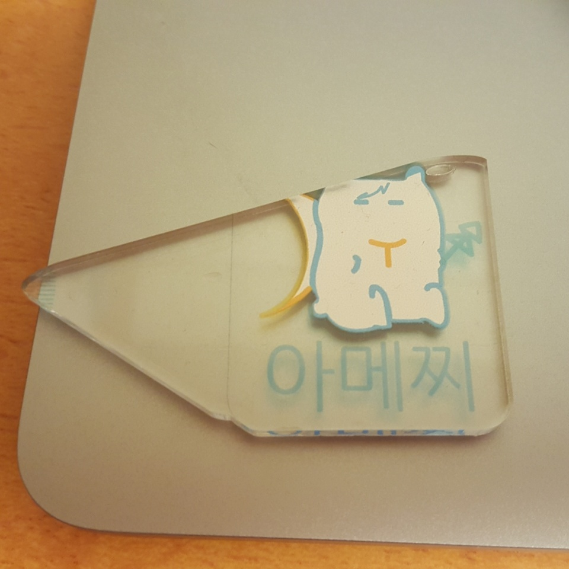

3d/UVprinter
「3Dファイルの作成」


stlのファイル
stl download
3Dプリンターで印刷する過程
1. Tinkercad Tinkercadで３Dデーターを作成
２.

（作成したもののカプチャー）
3.web上のデーターをstlファイルに保存。３dプリンターで印刷。
4.印刷したものを消毒し、ふたから外す。

完成品。
これは、課程の動画です。
「UVプリンターで印刷」
担当以外のUVプリンターでアクリルキリンを作りました。

aiで作成したデーター
ai file download
UVプリンターで印刷する過程
1.aiでデーターを作成する（cmyk）

ペンツールで描いていきます。

2.epsで保存し、先生のpcでアクリルの上に印刷。
3.印刷が終わったら、レーザーカッチングする。
完成品

私のは、カッティングが誤ったですが、原因は知りません。
多分、四方の黒い点の印刷が薄かったかと推測します。